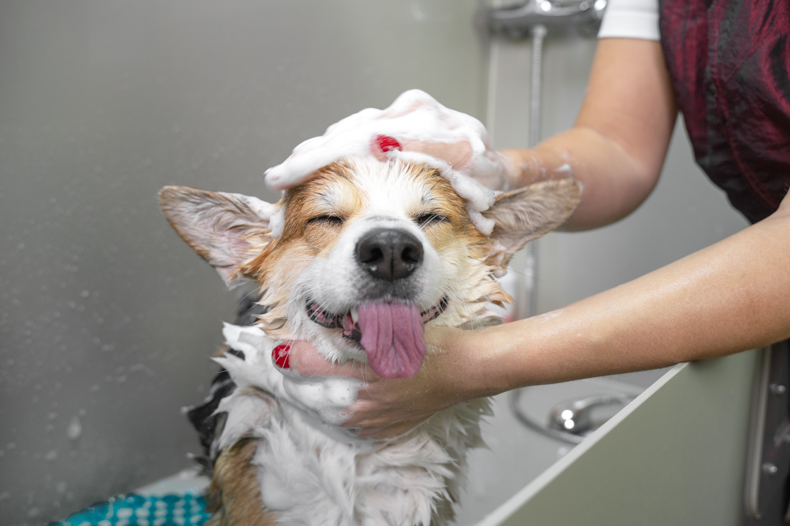

How to bathe a dog
Man's best friend can quickly turn into a big mess, I will teach you how you can wash your dog and keep them super cuddly.
Step One

First, make sure you get a dog brush approprate for your dogs fur type fur type, which you will use to brush the fur in the direction of hair growth. Brush them for a few minutes and give them a treat.
Step Two

Next, you will put your dog into the bath and soak their fur with lukewarm water. Be sure to get all of their fur, but avoid getting the ears wet.
Step Three
Lather the approprate amount of soap though your dogs fur. Be sure to get under its belly too. Avoid it's ears and eyes.
Step Four
Use lukewarm water to rinse all of the soap out of the dogs fur. Still making sure to avoid the eyes and ears. Ensure that all of the soap is removed to avoid irritation.
Step five
Finally, remove your dog from the bath and take a fresh dry towel. Rub it lightly but quickly across the fur to try. If cold out, do not let your pet outside until they are fully dry.